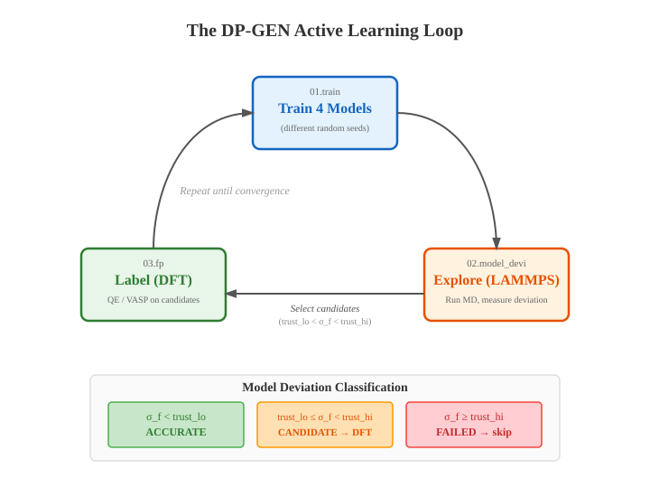

Ch 6: The dpgen Concept#
You trained a DeePMD model. Loss curve looked great. You froze it, ran LAMMPS, watched 50 ps of beautiful NVT dynamics at 300 K. Everything stable. Forces make sense. You’re feeling good.
Now bump the temperature to 500 K.
Watch the simulation blow up in 200 steps.
That’s not a bug. That’s the most important failure you’ll see in this entire pipeline, and understanding why it happens is worth more than any config file I can show you.
Your Training Data Has Holes#
Here’s what actually happened. You trained on 200 frames from an AIMD run at 300 K. The model memorized those 200 configurations. Not learned. Memorized. At 300 K, atoms jiggle gently around their equilibrium positions. The model saw gentle jiggles. It got very, very good at gentle jiggles.
Then you asked it about 500 K. Atoms move further. They explore higher-energy configurations, visit regions of the potential energy surface the model has never seen. And unlike a classical force field (which would give you mediocre but stable numbers), a neural network gives you confident nonsense. The model doesn’t know it doesn’t know. It just predicts. Badly. Confidently.
Think about it like a student who studied only Chapter 3 of the textbook. On a Chapter 3 quiz? Perfect score. On the final exam? They don’t leave the questions blank. They write answers. Wrong answers, delivered with full conviction.
So the obvious fix: run more AIMD at higher temperatures, add those frames, retrain. But which temperatures? How many frames at each one? What about different pressures? Different surface coverages? How do you know when you have enough?
If you’re doing this by hand, you’re playing whack-a-mole. Train. Test. Find a failure. Run more DFT. Retrain. Find another failure. I did this for three weeks on a copper surface before someone pointed me to dpgen. Three weeks of manual iteration that dpgen automates in a weekend.
Don’t be me.
Let the Model Tell You Where It’s Ignorant#
dpgen (Deep Potential GENerator) automates the entire data-generation loop. And the core idea is so simple it almost feels like cheating.
Train multiple models on the same data. Where they disagree, the data is insufficient.
Read that again. Seriously. Everything in dpgen, every stage, every config parameter, every convergence criterion, is engineering built around that one sentence. And that’s the whole trick.
Here’s the concrete version. Train 4 models on identical data. Same architecture, same loss function, different random seeds. Now throw a new structure at all four and ask: what’s the force on atom 7?
If they all say roughly 0.5 eV/A, that structure is in familiar territory. The model knows this.
But if model 1 says 0.5, model 2 says 0.3, model 3 says 0.8, model 4 says 0.4? They’re arguing. And that argument is the most valuable data you’ll generate in this entire workflow. Those structures, the ones where trained models can’t agree, are exactly where your model needs to learn next.
Are you seeing this? No Bayesian inference. No expensive ensemble methods. Just: “do these four neural networks agree on the answer?”
Key Insight
Train 4 models on identical data with different random seeds. They’ll agree on configurations similar to the training data and disagree on configurations far from it. The disagreement itself is the uncertainty signal. No Bayesian inference. No expensive ensemble methods. Just: “do these four neural networks agree on the answer?” If yes, the model knows this region. If no, it doesn’t. Simple. Effective. This is the idea that makes dpgen work.
The DP-GEN paper (Zhang et al., 2020) calls this concurrent learning: the model learns while simultaneously identifying what it still needs to learn.
The Three-Stage Loop#
Every dpgen iteration has exactly three stages. Same order. Every time. Let me trace through them.
{kind=link}

Fig. 22 The DP-GEN active learning loop. Four models train in parallel, then explore configuration space via LAMMPS MD. Structures where models disagree (candidates) are labeled with DFT and fed back for retraining. The loop repeats until convergence.#
Stage 1: Train (00.train/)#
Take everything you have. Your initial AIMD data plus whatever DFT labeled in previous iterations. Train 4 DeePMD models on it. Same data, same architecture, different random seeds.
And I know what you’re thinking. “Four models? That’s 4x the GPU time just for training.”
Yeah, it is. And it’s worth it. Because without those four models, you have no uncertainty estimate. You’re flying blind. You’re adding DFT data randomly instead of strategically. Four models trained in parallel on one GPU takes maybe 30 minutes per model. The DFT calculations those models save you? Hundreds of hours.
Why exactly 4 and not some other number? Because 2 isn’t enough. Two students can make the same mistake by coincidence and you’d never know. 10 would be more statistically robust but costs 10x the GPU hours. 4 is where diminishing returns kick in. The DP-GEN authors tested this. Four is the standard. You could use three. I wouldn’t.
After training, you have four frozen models: graph.000.pb, graph.001.pb, graph.002.pb, graph.003.pb. Four neural networks that studied the same textbook but took different notes. Clean.
Stage 2: Explore (01.model_devi/)#
Now the fun part. Take those 4 models and send them on a field trip.
LAMMPS runs MD using all 4 models simultaneously. At each timestep, every model predicts forces on every atom. dpgen records the maximum deviation across the 4 models for each frame. This is the exploration stage. You’re pushing the models into new territory (higher temperatures, bigger systems, surfaces they haven’t seen) and watching where they stumble.
The output is model_devi.out, a file with columns for step number, energy deviations, and force deviations. The column that matters is max_devi_f: the maximum force deviation across all atoms and all model pairs.
Open that model_devi.out after your first iteration. See it? Where the models agree, they’ve learned. Where they argue, they haven’t. The argument is the data. That’s it. That’s the entire active learning signal.
Stage 3: Label (02.fp/)#
Take the structures where the models disagreed. Run DFT on them. Get the real energies and forces for exactly the configurations where the model was uncertain.
Add those freshly labeled structures to the training set. Go back to Stage 1.
That’s the loop. Train. Explore. Label. Repeat.
HPC Reality
Stage 3 is almost always the bottleneck. Training takes minutes to hours on a GPU. LAMMPS exploration takes minutes. But each DFT calculation can take hours on 128 CPU cores, and you might run 50 of them per iteration. This is where your HPC allocation goes. Think of fp_task_max as your grading capacity. The teacher can only grade so many exams per week. Set it around your compute budget, not around what’s theoretically optimal.
Simulation
Want to feel the active learning loop in your hands before automating it? The CSI Princeton Workshop (Session 5) walks you through running LAMMPS with 4 models, extracting candidates, labeling them with QE, and retraining. Do one cycle manually. After that, dpgen’s automation stops feeling like magic and starts feeling like relief.
The Three Buckets#
Not every frame from the exploration is useful. Most aren’t. dpgen sorts them into three categories based on max_devi_f, and this sorting is where the intelligence lives.
Think of it like 4 students taking the same exam independently.
Model Deviation |
Bucket |
Student Analogy |
Action |
|---|---|---|---|
|
Accurate |
All 4 students got the same answer. Easy question. |
Skip. No DFT needed. |
|
Candidate |
Different but reasonable answers. Hard but fair question. |
Send to DFT. This is the gold. |
|
Failed |
One student writes “purple” for a math question. |
Skip. Too far gone to learn from. |
Accurate frames? The model knows this region. Spending DFT compute here is like re-studying material you already aced. Pointless.
Candidate frames? This is the gold. These configurations are uncertain but physically reasonable. Hard but learnable. Send them to DFT.
Failed frames? The models disagree so wildly that the structure is probably junk. Atoms overlapping. A simulation mid-explosion. The model isn’t just confused here; it’s incoherent. Labeling this won’t teach it anything useful.
So that’s the three buckets. Accurate, candidate, failed. Only candidates go to DFT.
Key Insight
Only candidates go to DFT. Not the accurate frames (waste of compute). Not the failed frames (too far gone). The candidates are the “hard but learnable” configurations. dpgen spends your DFT budget exactly where learning actually happens. This is what makes it efficient instead of just automated.
Trust Levels: The Two Numbers That Control Everything#
model_devi_f_trust_lo and model_devi_f_trust_hi. These define the boundaries between the three buckets. Get them wrong and the whole loop either stalls or hemorrhages compute. Pay attention to this next part.
From our graphene + H\(_2\) param.json:
"model_devi_f_trust_lo": 0.05,
"model_devi_f_trust_hi": 0.15,
Units are eV/Angstrom. 0.05 eV/A means: if the worst atom in the frame has force deviation below this across all four models, the structure is in well-learned territory. Skip it. 0.15 eV/A means: if the deviation is above this, the structure is probably unphysical or so far gone that labeling it won’t help. Skip it too. Everything between 0.05 and 0.15 is a candidate. Those go to DFT.
Now here’s where people get burned.
Common Mistake
Too tight (trust_lo = 0.01): Almost every frame becomes a candidate. You’re drowning DFT in hundreds of structures per iteration, half of them nearly identical. Your HPC allocation evaporates and the model barely improves because the new data is redundant.
Too loose (trust_lo = 0.5): Everything looks “accurate” from iteration zero. The model never gets new training data. It never improves. You run 3 iterations of zero progress and wonder why convergence isn’t happening. I did exactly this. Set trust_lo = 0.25 on my first dpgen run. Every structure was “accurate.” The model learned nothing for 3 iterations. Three iterations of zero progress on an HPC cluster that charges by the hour. I learned this the expensive way.
Start with trust_lo = 0.05, trust_hi = 0.15. Start there. Adjust later. After your first iteration, look at the model_devi.out distribution and tune. We cover the tuning process in Ch 10.
What Convergence Looks Like#
Each iteration, the model improves. More explored configurations fall into the “accurate” bucket. Fewer become candidates. The accurate ratio (fraction of frames with max_devi_f < trust_lo) climbs toward 100%.
Iteration 0: Maybe 30% accurate. The model barely knows anything beyond the seed data. Iteration 1: 55% accurate. It picked up the low-hanging fruit. Iteration 2: 75% accurate. Momentum building. Iteration 3: 90% accurate. Most of configuration space is covered. Iteration 4: 97% accurate. Almost there.
This is the part that made it click for me. You watch those numbers climb iteration by iteration and you can see the model learning. 30% to 55% to 75% to 90% to 97%. Each iteration, fewer candidates. Each iteration, fewer questions the model can’t answer. Until there’s nothing left to learn.
When the accurate ratio crosses your threshold (typically 95-99% across all explored conditions), the model has converged. No more candidates means no more questions the model can’t answer. Freeze the final model and move to validation. That’s your model. Frozen and ready.
In practice? Simple systems (bulk metals, small molecules) converge in 3-5 iterations. Complex systems (interfaces, reactive chemistry, multi-phase) can take 10-20+. Our graphene + H\(_2\) system took 8.
Key Insight
dpgen has built-in convergence parameters:
"fp_accurate_threshold": 0.98,
"fp_accurate_soft_threshold": 0.9,
If the accurate ratio exceeds fp_accurate_threshold (98%), dpgen stops sending structures to DFT. If it exceeds fp_accurate_soft_threshold (90%), it starts reducing the number of candidates. These are guardrails, not autopilot. You should still inspect convergence manually. The numbers can lie if your exploration schedule doesn’t cover the conditions you actually care about.
The Model Deviation Caveat#
Here’s what nobody tells you. And skipping this will cost you.
Model deviation is NOT the true error.
Four models can agree perfectly and still be completely wrong.
How? Think about it. If the simulation visits a region entirely outside the training domain, not a little outside but in a completely different part of configuration space, all 4 models extrapolate in the same direction. They give the same wrong answer. Low deviation. Massive error. Four students who all studied the same wrong textbook. They agree on the same wrong answer. Perfect consensus. Completely wrong.
I cannot stress this enough. Low model deviation means high agreement. It does not mean high accuracy. Those are different things.
Is this common? No. LAMMPS exploration tends to visit nearby regions incrementally, so you usually drift into unfamiliar territory gradually. But it can happen with:
Large temperature jumps between iterations
Phase transitions the model has never seen
Bond breaking or forming (reactive chemistry)
Completely different system sizes or compositions than training
The fix is straightforward: don’t rely only on model deviation for validation. After dpgen converges, run independent tests. dp test on held-out data. Long NVE stability runs. Property comparisons (RDF, diffusion coefficients, elastic constants) against DFT or experiment. We cover this properly in Ch 11.
This one will bite you if you treat model deviation as ground truth. It’s an uncertainty proxy. A good one. But a proxy.
The Exploration Schedule#
dpgen doesn’t run one LAMMPS simulation per iteration. It runs a matrix of simulations across different systems, temperatures, and ensembles. This is defined by model_devi_jobs in param.json.
Here’s what our real graphene run uses:
"model_devi_jobs": [
{
"_comment": "Iter 0: Light exploration, bare + 4H2 + gas",
"sys_idx": [0, 1, 4],
"temps": [77, 150, 300],
"nsteps": 50000,
"ensemble": "nvt",
"trj_freq": 100
},
{
"_comment": "Iter 1: Add 8H2",
"sys_idx": [0, 1, 2, 4],
"temps": [77, 300, 500],
"nsteps": 200000,
"ensemble": "nvt",
"trj_freq": 100
}
]
Let’s trace through this. Notice the strategy.
Iteration 0 is gentle: 3 systems, mild temperatures, short runs. The model is new, barely trained. You don’t throw it into the deep end. You ease it in. Iteration 1 adds a new system (graphene + 8 H\(_2\)), pushes to 500 K, and runs 4x longer. Each iteration is a harder field trip than the last.
The sys_idx values reference the sys_configs list (0 = bare graphene, 1 = graphene + 4 H\(_2\), 2 = graphene + 8 H\(_2\), etc.). The temps list means dpgen runs a separate LAMMPS simulation for every combination of system and temperature. So iteration 0 runs 3 systems times 3 temperatures = 9 LAMMPS simulations. Iteration 1 runs 4 times 3 = 12.
You design this schedule to progressively challenge the model. Start easy. Escalate. Like semesters. Each one, harder material. Fewer failures.
We’ll walk through every field in Ch 7. For now, the key idea: you start gentle and push harder each round.
The record.dpgen State Machine#
dpgen tracks its progress in a file called record.dpgen. It’s a plain text file. Two numbers per line.
0 0 ← Iteration 0, started training
0 1 ← Iteration 0, finished training
0 2 ← Iteration 0, started exploration (model_devi)
0 3 ← Iteration 0, finished exploration
0 4 ← Iteration 0, started labeling (fp)
0 5 ← Iteration 0, finished labeling
1 0 ← Iteration 1, started training
1 1 ← Iteration 1, finished training
First number is the iteration. Second number is the substage. Each of the three main stages (train, explore, label) has two substages: “started” (even number) and “finished” (odd number). So stages 0-1 are training, 2-3 are exploration, 4-5 are labeling.
Every time dpgen completes a substage, it appends a line. If dpgen crashes (and it will, because HPC jobs hit walltime limits and queues fill up), it reads this file on restart to figure out exactly where it left off.
Config Walkthrough
The manual override. If you need to re-run a specific stage (say, the fp stage of iteration 2 because a DFT job exceeded walltime), delete the corresponding line from record.dpgen and restart dpgen. It picks up from wherever the gap is. This is how you fix partially failed iterations without starting over. Use it carefully, but know it exists. There is no good reason to skip knowing about this. It will save you.
Putting It All Together#
Alright, enough theory. Let me trace one complete iteration so you can see every piece in motion.
Iteration 0:
dpgen reads
init_data_sys, your initial training data. Say 200 frames from AIMD. The seed curriculum.Train (Stage 1): 4 DeePMD models train on those 200 frames. Same architecture, different random seeds. On a GPU, roughly 30 minutes per model.
Explore (Stage 2): The frozen models run as LAMMPS
pair_styleacross every system/temperature combination inmodel_devi_jobs[0]. For our graphene case, that’s 9 simulations (3 systems times 3 temperatures). During each simulation, dpgen records force deviation across all 4 models everytrj_freqsteps.Sort (automatic): dpgen reads every
model_devi.outfile and drops each frame into accurate, candidate, or failed based ontrust_loandtrust_hi. It randomly selects up tofp_task_max(50 in our case) candidates for DFT labeling, with at leastfp_task_min(5) per iteration.Label (Stage 3): QE runs SCF calculations on the selected candidates. Each one produces energies and forces. These get converted to DeePMD format and added to the cumulative training set.
Iteration 0 is done. The training set grew from 200 frames to maybe 245. One iteration down. On to iteration 1.
Iteration 1 repeats the process with 245 frames and model_devi_jobs[1], which has harder conditions and more systems. Fewer candidates this time because the model already knows the easy stuff. Maybe 30 new frames.
Iterations 2, 3, 4… keep going. Training set grows. Model improves. Fewer and fewer candidates. When the accurate ratio crosses 98% across all conditions, the model is done learning. Freeze it and validate.
Simulation
Try this yourself: After your first dpgen iteration completes, look at iter.000000/01.model_devi/task.000.000000/model_devi.out. Run this. Look at column 5:
# Accurate (column 5 < 0.05)
awk '$5 < 0.05 {n++} END {print n}' model_devi.out
# Candidate (0.05 <= column 5 < 0.15)
awk '$5 >= 0.05 && $5 < 0.15 {n++} END {print n}' model_devi.out
# Failed (column 5 >= 0.15)
awk '$5 >= 0.15 {n++} END {print n}' model_devi.out
Check the numbers. Those three counts tell you exactly where your model stands. More in the first bucket than the second? Good. The model is learning. Most in the third? Your initial data was too thin. Start over with more AIMD frames.
What’s Next#
You now have the concept. The 3-stage loop. Model deviation as uncertainty. The three buckets. Trust levels. Convergence. The caveat about deviation vs. true error. That’s the hard part, and you just got through it.
In Ch 7, we open param.json and walk through every field, line by line, using a real config from the graphene + H\(_2\) project. In Ch 8, we do the same for machine.json, covering where and how each stage actually runs on your hardware. The concept is done. Now we configure.